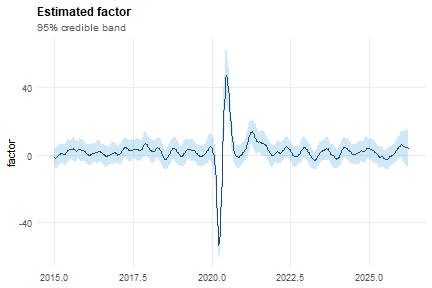
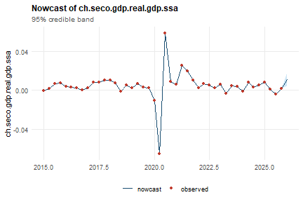
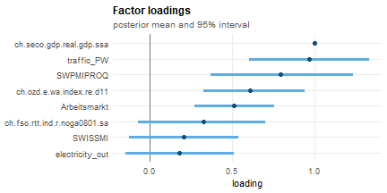
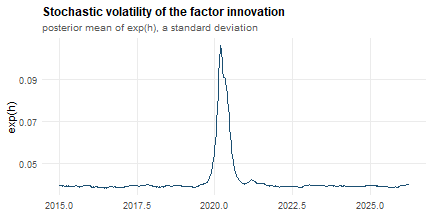
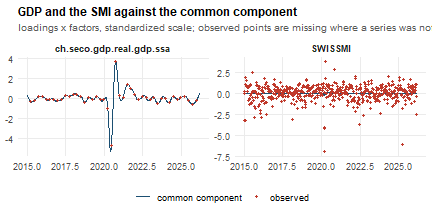
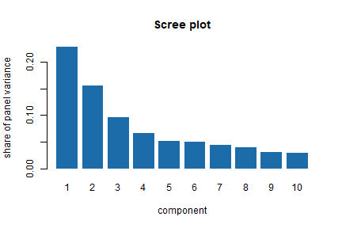

Introduction
mfbdfm combines indicators observed at different
frequencies — weekly, monthly, quarterly — into a single high-frequency
activity factor, and can anchor that factor to a low-frequency target
series so it reads directly as the target’s growth rate. The package
ships a flagship application, the Weekly Activity Index
(WAI), a weekly GDP indicator for Switzerland, which this
vignette uses as the worked example throughout.
This vignette is purely applied: it walks the workflow from data to
nowcast and does not state the model. For the measurement and state
equations, the mixed-frequency aggregation weights, identification and
stochastic volatility, see
vignette("methodology", package = "mfbdfm"). The full
empirical results and a real-time forecast evaluation are in Kronenberg
(2026); see ?mfbdfm for the citation and for the underlying
multi-factor framework of Eckert, Kronenberg, Mikosch & Neuwirth
(2025).
Glossary
The package’s documentation uses the vocabulary of Bayesian dynamic
factor models throughout. Each term below means exactly this, everywhere
in mfbdfm.
Model structure
- Mixed frequency — input series observed at different sampling intervals (here weekly, monthly, quarterly) entering one model without first being aggregated to the slowest of them. Internally everything is placed on a common 48-periods-per-year weekly grid.
-
Factor
()
— the single unobserved (latent) weekly series that the model extracts
as the common movement shared by all input series. In
ind_dfm()it is reported as an annualised growth rate, not as a level. - Loading () — the coefficient linking series to the factor in the measurement equation: how strongly, and with what sign, that series responds to a one-unit move in the factor.
- Measurement equation — the equation linking each observed series to the factor, its distributed lags, and a series-specific idiosyncratic error. State equation — the autoregressive equation governing how the factor itself evolves through time.
- Flow versus stock — a flow variable accumulates within a period (GDP, exports), so its low-frequency value aggregates the weekly values inside it; a stock variable is a snapshot (a survey balance, an index level). The classification selects the temporal-aggregation weights, so it changes results.
- Temporal aggregation — the arithmetic that relates a low-frequency observation to the weekly factor values covering the same span; flows use the geometric-mean approximation of Mariano and Murasawa (2003).
- Data augmentation — treating unobserved values (missing entries, and the weekly values of a series that is only published monthly or quarterly) as additional unknowns sampled alongside the parameters, rather than imputing or discarding them.
- Quasi-differencing — transforming the measurement equation by each series’ own estimated error autocorrelation, so that serially correlated idiosyncratic noise is not misread as a movement in the common factor (Chib and Greenberg, 1994).
- Stochastic volatility — letting the variance of the factor’s innovations vary over time as its own latent process, so a crisis shows up as a genuinely higher variance rather than as a string of implausible draws under a constant variance.
-
Identification — resolving the fact that a factor
model cannot distinguish
from
:
the likelihood is unchanged, so something must pin the scale (and sign).
ind_dfm()pins it by fixing the loading on the target series to one during sampling;fcast_dfm()leaves the loadings free and resolves the indeterminacy after sampling by rotation. -
Target / anchoring — the series whose loading is
fixed to one in
ind_dfm()(for the WAI, quarterly real GDP). Anchoring is what makes the extracted factor interpretable as that series’ growth rate at weekly frequency, rather than a generic index that merely correlates with it. Infcast_dfm()thetargetargument does not affect estimation; it only selects which series’ nowcast is surfaced. - Common component — loadings times factors, temporally aggregated: the part of a series the factor explains, as opposed to its idiosyncratic part.
Estimation
-
Prior — the distribution expressing what is assumed
about a parameter before seeing the data; posterior —
the distribution of that parameter after conditioning on the data.
dfm_priors()builds the former; every value in a fitted object is a summary of the latter. -
Hyperparameter — in this package the term is
avoided. The numbers passed through
dfm_priors()are the parameters of the prior distributions (e.g. the shape and scale of an inverse-gamma prior on a variance), and are called prior parameters. Settings that control the sampler rather than the model — stability bounds, rotation tolerances — are not priors and live indfm_control(). - Gibbs sampling — the Markov chain Monte Carlo scheme used here: each block of unknowns is drawn in turn from its distribution conditional on the current value of all the others, and the chain of such sweeps converges on the joint posterior.
-
Draw — one complete sweep of the sampler, i.e. one
sample from the posterior. Burn-in
(
burn_in) — the initial draws discarded, before the chain has reached its stationary distribution. Thinning (thinning) — keeping only every -th retained draw, to reduce the autocorrelation between stored draws.length_sampleis the number of draws kept after burn-in. -
Posterior mean / posterior variance — the average
and the variance of a quantity across the retained draws.
fit$factorandfit$nowcastare posterior means;fit$factor_varandfit$nowcast_varthe matching variances. -
Standardisation — rescaling every input series, the
target included, to mean zero and unit variance before estimation, so
loadings are comparable and no series dominates through its units alone.
prepare_data()does this, and the nowcast is converted back to the target’s own units afterwards; note that in the prepared matrix a0encodes missing, not the mean.
Output
- Nowcast — an estimate of the current period’s value of a series that has not yet been published (quarterly GDP, weeks before its release). Backcast — the same for a period that is already over but still unpublished. Forecast — a period that has not yet ended. All three come out of the same smoothed state here; they differ only in where the estimated period sits relative to the data.
-
Vintage — the version of a series as it stood at a
given past date, before subsequent revisions. Real-time evaluation uses
the vintage that was actually available at each decision date, which is
what
get_real_time_gdp_vintages()andcut_data_real_time()supply. -
Index — the cumulated level path implied by the
factor’s growth rates (
fit$index), as opposed to the growth rate itself.
The data
Three datasets ship with the package.
mfbdfm_example_data is the one used here: eight series —
quarterly GDP plus seven indicators at monthly and weekly frequency —
that already include the GDP target. It is a ready
mfbdfm_data() object (see “Bringing your own data” below),
so it carries its own target and its own flow/stock classification, and
prints what it contains:
data(mfbdfm_example_data)
mfbdfm_example_data
#> <mfbdfm_data> 8 series (6 flow, 2 stock)
#> target: ch.seco.gdp.real.gdp.ssa
#>
#> by frequency:
#> 4 1 flow 0 stock
#> 12 2 flow 1 stock
#> 48 3 flow 1 stock <- highest; flow/stock has no effect here
#>
#> series (first 10):
#> ch.fso.rtt.ind.r.noga0801.sa flow freq 12 n 133
#> ch.ozd.e.wa.index.re.d11 flow freq 12 n 131
#> SWPMIPROQ stock freq 12 n 134
#> SWISSMI flow freq 48 n 538
#> traffic_PW flow freq 48 n 532
#> electricity_out flow freq 48 n 529
#> Arbeitsmarkt stock freq 48 n 541
#> ch.seco.gdp.real.gdp.ssa flow freq 4 n 44
#>
#> Pass to ind_dfm() or fcast_dfm() as the first argument.data_ch_dataset is the full curated indicator set and
deliberately does not contain GDP — real analyses
inject it at runtime from the real-time vintage database (see “Mixed
frequency and real-time vintages” below).
data_ch_dataset_test is a variant that includes it.
The flow/stock split matters: whether a series is a flow or a stock selects its temporal aggregation weights, so misclassifying a series changes the results.
Fitting the model
Real analyses use the full indicator set and a much longer chain —
the accompanying paper uses length_sample = 5000 after a
burn-in of 1000 — whereas here the eight example series and 2000
retained draws after a burn-in of 500 are used. This vignette is
precomputed: the fits below were run once when it was written,
so the output is real rather than illustrative, and
R CMD check does not re-run them (see
vignettes/precompile.R in the source repository).
Because the object carries target, there is no
target = argument at the call site:
target <- mfbdfm_example_data$target
target
#> [1] "ch.seco.gdp.real.gdp.ssa"Printing the fit gives the shape of the model and the most recent nowcasts:
fit
#> Single-factor mixed-frequency dynamic factor model (Kronenberg 2026)
#> Call: ind_dfm(flows = mfbdfm_example_data, length_sample = 2000, burn_in = 500)
#>
#> series (n) : 8
#> periods (t): 541
#> target : ch.seco.gdp.real.gdp.ssa
#>
#> Most recent nowcasts for ch.seco.gdp.real.gdp.ssa:
#>
#> time nowcast
#> 2024.250 0.00785
#> 2024.500 0.00290
#> 2024.750 0.00518
#> 2025.000 0.00786
#> 2025.250 0.00123
#> 2025.500 -0.00440
#> 2025.750 0.00151
#> 2026.000 0.01136
#>
#> Full results: $factor, $nowcast, $index, $pars; mfbdfm_nowcast(),
#> summary(), plot(), as.data.frame(), coef(), fitted(), residuals(),
#> logLik()
#> Tables: mfbdfm_table_loadings(), mfbdfm_table_parameters(),
#> mfbdfm_table_nowcast()summary() adds the posterior loadings and
measurement-error variances, each with a 95% interval, the residual fit
on the observed entries, and a per-series R-squared of the common
component. The target’s loading is fixed at 1 by construction — that
restriction is what makes the factor a GDP growth rate rather than a
generic index — and its measurement error is shrunk toward zero, which
is also why its own R-squared is close to one by construction rather
than as a finding:
summary(fit)
#> Single-factor mixed-frequency dynamic factor model (Kronenberg 2026)
#> Call: ind_dfm(flows = mfbdfm_example_data, length_sample = 2000, burn_in = 500)
#>
#> series (n) : 8
#> factors (q): 1
#> periods (t): 541
#> target : ch.seco.gdp.real.gdp.ssa
#>
#> Factor loadings (posterior mean, 95% interval):
#> series mean sd lower upper
#> 1 ch.fso.rtt.ind.r.noga0801.sa 0.3244 0.1963 -0.0673 0.7037
#> 2 ch.ozd.e.wa.index.re.d11 0.6120 0.1560 0.3256 0.9395
#> 3 SWISSMI 0.2065 0.1702 -0.1216 0.5389
#> 4 traffic_PW 0.9686 0.1856 0.6047 1.3338
#> 5 electricity_out 0.1815 0.1677 -0.1481 0.5135
#> 6 ch.seco.gdp.real.gdp.ssa 1.0000 0.0000 1.0000 1.0000
#> 7 SWPMIPROQ 0.7955 0.2203 0.3715 1.2365
#> 8 Arbeitsmarkt 0.5126 0.1244 0.2705 0.7544
#>
#> Measurement error variance (posterior mean, 95% interval):
#> series mean sd lower upper
#> 1 ch.fso.rtt.ind.r.noga0801.sa 0.8751 0.1174 0.6720 1.1330
#> 2 ch.ozd.e.wa.index.re.d11 0.8116 0.1039 0.6219 1.0258
#> 3 SWISSMI 0.8326 0.0511 0.7412 0.9444
#> 4 traffic_PW 0.7195 0.0445 0.6364 0.8095
#> 5 electricity_out 0.9736 0.0638 0.8582 1.1036
#> 6 ch.seco.gdp.real.gdp.ssa 0.0010 0.0001 0.0009 0.0011
#> 7 SWPMIPROQ 0.0855 0.0116 0.0664 0.1117
#> 8 Arbeitsmarkt 0.3106 0.0196 0.2741 0.3523
#> (the measurement error sd is the square root of `mean`)
#>
#> Fit to observed data:
#> observed values: 2582
#> residual RMSE : 6.915e-07 (standardized scale)
#>
#> R-squared of the common component, by series:
#> series freq n_obs R-squared
#> ch.seco.gdp.real.gdp.ssa 4 44 1.000
#> ch.ozd.e.wa.index.re.d11 12 131 0.137
#> traffic_PW 48 532 0.116
#> Arbeitsmarkt 48 541 0.065
#> ch.fso.rtt.ind.r.noga0801.sa 12 133 0.057
#> SWPMIPROQ 12 134 0.052
#> SWISSMI 48 538 0.008
#> electricity_out 48 529 0.002
#> Note: the target's loading is fixed to 1 and its measurement error
#> shrunk towards zero to identify the factor, so its R-squared is ~1
#> by construction rather than as a finding.The standard extractors all work. coef() returns the
loadings, as.data.frame() gives a tidy frame of the factor
and its band, and fitted()/residuals() return
the augmented dataset and its residuals with missing observations
masked. For tables with posterior uncertainty, ready for a report, see
mfbdfm_table_loadings(),
mfbdfm_table_parameters() and
mfbdfm_table_nowcast():
round(coef(fit), 3)
#> ch.fso.rtt.ind.r.noga0801.sa ch.ozd.e.wa.index.re.d11
#> 0.324 0.612
#> SWISSMI traffic_PW
#> 0.206 0.969
#> electricity_out ch.seco.gdp.real.gdp.ssa
#> 0.181 1.000
#> SWPMIPROQ Arbeitsmarkt
#> 0.795 0.513
head(as.data.frame(fit), 3)
#> time factor factor_lower factor_upper
#> 1 2015.000 -1.297848 -6.845525 4.249828
#> 2 2015.021 -1.719795 -7.520727 4.081138
#> 3 2015.042 -1.535142 -7.630262 4.559978Looking at the fit
plot() takes a type argument and returns a
ggplot object, so any view can be modified before it is
printed. The available views are "factor" (the default),
"nowcast", "loadings",
"residuals", "volatility" and
"fit"; they are the same for both model entry points. The
default is the factor — the WAI itself, an annualized weekly growth rate
— with a 95% posterior credible band:
plot(fit)
The nowcast view puts the target’s own observations on top of the model’s estimate of them:
plot(fit, type = "nowcast")
The loadings view shows how strongly each series is tied to the factor, with a 95% posterior interval. The target’s loading is the fixed 1 that identifies the model:
plot(fit, type = "loadings")
The volatility view is the posterior mean of exp(h), the
standard deviation of the factor innovation — this is what lets the
model absorb a crisis instead of smearing it across the whole
sample:
plot(fit, type = "volatility")
"residuals" and "fit" compare each series
with its common component — loadings times factors, the
part the factor explains — so they show how much of a series the factor
accounts for. They draw one panel per series and accept a
series argument to pick a few, which matters once the
dataset is the full several dozen series rather than the handful used
here:
plot(fit, type = "fit", series = c(target, "SWISSMI")) +
ggplot2::labs(title = "GDP and the SMI against the common component")
Nowcasts
fit$nowcast is the factor’s information at the target’s
own (here quarterly) frequency, back in the target’s original units.
mfbdfm_nowcast() is the accessor for it, returning the
nowcasts with a credible band rather than as a bare ts. It
works the same way for a fcast_dfm() fit, and
last = TRUE gives just the current period — the usual
real-time query:
tail(mfbdfm_nowcast(fit))
#> time nowcast sd lower upper
#> 40 2024.75 0.005175413 4.624780e-07 0.005174507 0.005176320
#> 41 2025.00 0.007858623 4.646870e-07 0.007857713 0.007859534
#> 42 2025.25 0.001230718 4.541081e-07 0.001229828 0.001231608
#> 43 2025.50 -0.004400680 4.662971e-07 -0.004401594 -0.004399767
#> 44 2025.75 0.001506242 4.633840e-07 0.001505333 0.001507150
#> 45 2026.00 0.011359580 3.461420e-03 0.004575323 0.018143838
mfbdfm_nowcast(fit, last = TRUE)
#> time nowcast sd lower upper
#> 1 2026 0.01135958 0.00346142 0.004575323 0.01814384The band comes from fit$nowcast_var, the posterior
variance of each nowcast. Note that it is essentially zero in quarters
where the target is actually observed — the identifying prior shrinks
the target’s measurement error toward zero, so the model has nothing to
be uncertain about there. It is informative for the periods the model
has to fill in, which is where a nowcast interval is wanted anyway.
There is deliberately no predict() method. The nowcasts
are computed while the model is fitted, so there is no separate
prediction step to run on new data, and a predict()
returning stored values would advertise a capability the model does not
have.
fit$index is the cumulated activity level, rebased to
100 at the start of the estimation window — the level counterpart of the
growth-rate factor:
Bringing your own data
mfbdfm_example_data arrived ready-made. The models
themselves take flows and stocks as two lists
split by type; when the data comes from somewhere else — a spreadsheet,
a database query — mfbdfm_data() builds that structure from
a long or wide data frame, an mts, or a list of
ts, and takes the flow/stock classification from a
meta table:
data(data_ch_dataset_test)
series <- c(data_ch_dataset_test$flows[c(target, "SWISSMI", "traffic_PW")],
data_ch_dataset_test$stocks[1:2])
series <- lapply(series, stats::window, start = 2018)
meta <- data.frame(series = names(series),
type = c("flow", "flow", "flow", "stock", "stock"))
d <- mfbdfm_data(series, meta, target = target)
d
#> <mfbdfm_data> 5 series (3 flow, 2 stock)
#> target: ch.seco.gdp.real.gdp.ssa
#>
#> by frequency:
#> 4 1 flow 0 stock
#> 12 0 flow 2 stock
#> 48 2 flow 0 stock <- highest; flow/stock has no effect here
#>
#> series (first 10):
#> ch.seco.gdp.real.gdp.ssa flow freq 4 n 32
#> SWISSMI flow freq 48 n 394
#> traffic_PW flow freq 48 n 388
#> SWCONPRCE stock freq 12 n 98
#> SWPROPRCE stock freq 12 n 97
#>
#> Pass to ind_dfm() or fcast_dfm() as the first argument.The reason to prefer this is the printout. When a series’ type is
expressed by which argument it was passed in, there is nothing
to inspect; printing the object shows the resolved classification and
the frequencies actually in use before committing to a
run that can take minutes to hours. The result is passed to
ind_dfm() exactly as mfbdfm_example_data was
above. (flows/stocks still work as a pair of
lists, if you already have them in that shape; the
mfbdfm_data argument is an additional entry point, not a
replacement.)
Mixed frequency and real-time vintages
Nothing above had to be said about frequencies: the example series
enter at 4, 12 and 48 observations per year and the model works on the
highest of them, treating everything unobserved — including the eleven
weeks in which quarterly GDP says nothing — as a latent state. That is
the whole point of the model, and it is why fit$factor is
weekly even though the target is quarterly:
The mixed-frequency case that needs more care is a real-time
one, where the question is not only which frequency a series has but
what was actually published at a given date.
mfbdfm_example_data has one GDP vintage baked in —
convenient for an example, but the wrong thing for a real-time
evaluation, which needs the vintage that was current at each evaluation
date. The real-time GDP vintage database ships with the package and
needs no configuration:
vintages <- get_real_time_gdp_vintages("quarterly")
dim(vintages)
#> [1] 144 105cut_data_real_time() truncates a dataset to what would
have been observable at a given date, substituting the appropriate GDP
vintage for the target series — the building block for the paper’s
real-time out-of-sample evaluation:
dat_rt <- cut_data_real_time(data_ch_dataset_test, current_date = 2024.5,
GDP_gr_vintages = vintages)
tail(time(dat_rt$flows[[target]]))
#> Qtr1 Qtr2 Qtr3 Qtr4
#> 2022 2022.75
#> 2023 2023.00 2023.25 2023.50 2023.75
#> 2024 2024.00Stochastic volatility and serial correlation
Two model features are switchable, and both default to
TRUE because both are wanted on real data.
Stochastic volatility lets the variance of the
common shocks move over time, so an abrupt swing such as the COVID-19
pandemic registers as a genuinely more volatile period instead of being
smoothed away. With stochastic_volatility = FALSE a single
constant variance is estimated instead:
set.seed(1)
fit_const <- ind_dfm(mfbdfm_example_data, length_sample = 2000, burn_in = 500,
stochastic_volatility = FALSE)fit$pars$h is the posterior mean of the factor’s log
innovation standard deviation, so exp(2 * h) is the
innovation variance. Under stochastic volatility it varies over the
sample; with the option off it is flat by construction:
signif(range(exp(2 * fit$pars$h)), 3)
#> [1] 0.00144 0.01120
signif(range(exp(2 * fit_const$pars$h)), 3)
#> [1] 0.0536 0.0536Note that switching it off does not fix the variance
at a value in ind_dfm() — the loading restriction already
pins the factor’s scale, so the variance is the free parameter the data
determines and it is still estimated, just held constant over time. In
fcast_dfm(), whose loadings are unrestricted, the same
option does fix it at one. The methodology vignette’s
“Identification” section explains why.
Serial correlation in the measurement errors is
removed by quasi-differencing, with one autocorrelation per series drawn
from the data. fit$pars$rho reports them; a series with a
large rho is one whose own persistent noise would otherwise
have been attributed to the common factor:
round(stats::setNames(as.numeric(fit$pars$rho), fit$inventory$key), 3)
#> ch.fso.rtt.ind.r.noga0801.sa ch.ozd.e.wa.index.re.d11
#> -0.061 0.047
#> SWISSMI traffic_PW
#> 0.402 0.429
#> electricity_out ch.seco.gdp.real.gdp.ssa
#> -0.125 0.000
#> SWPMIPROQ Arbeitsmarkt
#> 0.954 0.818serial_correlation = FALSE holds all of them at
(effectively) zero.
Choosing the number of factors
ind_dfm() has exactly one factor by construction.
fcast_dfm() asks for q, and the model gives no
guidance on it. select_factors() computes the Bai & Ng
(2002) information criteria IC1, IC2 and IC3, plus the
principal-component eigenvalues behind them:
sel <- select_factors(flows = data_ch_dataset_test$flows,
stocks = data_ch_dataset_test$stocks,
max_q = 8, na_action = "interpolate")
#> Warning: IC1/IC2/IC3 are minimised at `max_q` (8), so the minimum may lie
#> beyond the range evaluated. Raise `max_q`; if the minimum stays on the
#> boundary, the panel is too narrow for these criteria to settle - see
#> `?select_factors`.
sel
#> Bai-Ng factor-count selection
#>
#> Panel: 27 series at frequency 48, 1742 periods
#> 19 lower-frequency series excluded: ch.fso.rtt.ind.r.noga0801.sa, ch.seco.gdp.real.gdp.ssa, ch.ozd.e.wa.index.re.d11, ch.ozd.i.wa.index.re.d11, ...
#> missing values: interpolate
#>
#> q IC1 IC2 IC3 var % cum %
#> 1 -0.1380 -0.1375 -0.1393 23.0 23.0
#> 2 -0.2397 -0.2386 -0.2424 15.5 38.5
#> 3 -0.2863 -0.2845 -0.2902 9.6 48.1
#> 4 -0.2988 -0.2965 -0.3040 6.6 54.7
#> 5 -0.2976 -0.2947 -0.3041 5.2 59.9
#> 6 -0.3063 -0.3028 -0.3142 5.0 64.9
#> 7 -0.3167 -0.3127 -0.3259 4.4 69.3
#> 8 -0.3332 * -0.3286 * -0.3437 * 4.0 73.3
#>
#> Chosen q: IC1 = 8, IC2 = 8, IC3 = 8
#> IC1/IC2/IC3 are minimised at max_q = 8, so the minimum may lie beyond
#> the range evaluated. Raise `max_q`.
#> These are frequentist, principal-component criteria. They inform fcast_dfm()'s
#> `q`; they do not determine it.Two things in that printout matter more than the numbers.
The first is which data the criteria saw. They are defined for a balanced panel of a single frequency, so the mixed-frequency input has to be reduced to one: only the highest-frequency block is kept, and the quarterly and monthly series — including GDP — are dropped. The model is then fitted on data the criteria never looked at.
The second is that here all three criteria are minimised at
max_q, which is why the call warns. That is not a
recommendation to use eight factors; it means the minimum lies outside
the range evaluated, or nowhere. Raising max_q does not fix
it on this dataset: the penalties are calibrated for a large
cross-section, and with 27 weekly series the fall in
log V(k) outruns them. When that happens, read the variance
shares instead:

The first component explains about a quarter of the panel’s variance and the curve flattens after the third or fourth — which is the sort of judgement dfms’ vignette reaches for its own data, and the sort of judgement that has to be made here too.
So: the criteria inform q, they do not
determine it. They are frequentist and principal-component based, while
fcast_dfm() is Bayesian with post-hoc rotation. Fit two or
three values of q and compare; screeplot() on
the resulting fit shows how much of the panel each rotated
factor ended up explaining, which is the corresponding description after
the fact.
Beyond this vignette
For several common factors rather than one target-anchored factor,
use fcast_dfm(). It implements the multi-factor model of
Eckert et al. (2025) and takes the same data, but identifies the factors
by a post-hoc rotation rather than by anchoring, so its
target argument only selects which nowcast is surfaced.
fcast_dfm(q = 1) is not equivalent to
ind_dfm(); see ?fcast_dfm and the methodology
vignette.
The evaluation wrappers
The analysis pipeline does not call ind_dfm() directly.
It calls run_wai_adj(), which fits the model at one
evaluation date, trims the factor and nowcast to that date, and
optionally writes the fit to disk; and run_ar(), which fits
the AR(1) benchmark on the target series alone. Both take the same
flows/stocks/target arguments as
ind_dfm(), so they run on the example data:
dat <- mfbdfm_example_data
out_dir <- tempfile()
set.seed(1)
fit_full <- run_wai_adj(
flows = dat$flows, stocks = dat$stocks, target = target,
date = 2024.5, dataset_used = "vignette",
length_sample = 2000, burn_in = 500, output_dir = out_dir
)
fit_ar <- run_ar(flows = dat$flows, stocks = dat$stocks, target = target,
date = 2024.5, dataset_used = "vignette")
list.files(out_dir, recursive = TRUE)
#> [1] "vignette/fit_2024.5.Rda"
fit_ar$nowcast
#> Qtr1
#> 2026 0.004903796The two fits are the ingredients of the paper’s out-of-sample comparison, but they cannot be compared in sample, and it is worth seeing why. Because the factor is anchored to the target, the in-sample nowcast reproduces observed GDP almost exactly, while the AR(1) benchmark’s one-step errors are of the usual size:
gdp <- dat$flows[[target]]
errors <- stats::ts.intersect(
wai = gdp - fit_full$nowcast,
ar = stats::residuals(stats::arima(gdp, order = c(1, 0, 0)))
)
colMeans(errors^2)
#> wai ar
#> 1.116141e-16 2.028477e-04A dm_test_modified() p-value computed from those two
columns would be arithmetic, not evidence: the left-hand number is an
identity, not a forecast error. The published comparison is therefore
real-time — cut_data_real_time() inside a loop
over vintage dates, refitting at each one and keeping only the nowcast
for the quarter that was not yet published, as in
analysis/real_time_backcast.R.
dm_test_modified() then takes the two resulting error
vectors; see its own help page for a runnable minimal call.
For the in-sample and out-of-sample evaluation tables and plots shown
in the paper (correlation heatmaps, relative RMSE/MAE tables against the
SECO-WEA, F-CURVE, SECO-SEC, SNB-BCI and KOF-BARO benchmarks), see the
analysis/5_plots/ scripts in the package’s source
repository, which call get_combined_cor_table(),
get_insample_fit_table(),
create_rel_error_tables() and related functions documented
under ?get_combined_cor_table.
Conclusion
The workflow is short: describe the series with
mfbdfm_data(), fit with ind_dfm() (or
fcast_dfm()), and read the results off the fit with
summary(), plot() and the standard extractors.
What the package adds over a generic factor model is the mixed-frequency
handling, which needs no imputation step from you, and the target
anchoring, which makes the extracted factor a growth rate you can quote
rather than an index you have to rescale.
Two things to carry into a real run: use a chain far longer than the
one above (the paper’s is length_sample = 5000,
burn_in = 1000, and takes minutes to hours), and check
mfbdfm_data()’s printed flow/stock split before starting
it.
For the model itself, see
vignette("methodology", package = "mfbdfm").
References
Methodology / WAI background
- Kronenberg, P. (2026) — A high-frequency GDP indicator for Switzerland, Swiss Journal of Economics and Statistics, 162:10. https://doi.org/10.1186/s41937-026-00157-w. The primary methodology and application paper for this package: derives the WAI as a single, GDP-identified factor, with full in-sample and real-time out-of-sample evaluation against the benchmarks listed below.
- Eckert, F., Kronenberg, P., Mikosch, H., & Neuwirth, S. (2025) —
Tracking economic activity with alternative high-frequency
data, Journal of Applied Econometrics, 40(3), 270-290. https://doi.org/10.1002/jae.3104. The multi-factor
Bayesian mixed-frequency dynamic factor model implemented by
fcast_dfm(). - Eckert, Kronenberg, Mikosch, Neuwirth — Weekly Activity Index (WWA), SECO technical note and press material, 2021. Available from SECO (seco.admin.ch).
- SECO — Die Wöchentliche Wirtschaftsaktivität (WWA), Diskussionspapier.
- SECO — Konjunkturtendenzen, Exkurs on the WWA, issue 2020/4.
- SECO — BIP-Flash Machbarkeitsstudie, May 2024.
- SECO — Einfliessende Indikatoren (WWA input indicator list).
- SECO — Methodik note.
The references for the model’s derivation — Chan & Jeliazkov
(2009), Chib & Greenberg (1994), Mariano & Murasawa (2003), Bai
& Wang (2015), Kim, Shephard & Chib (1998), Primiceri (2005),
Indergand & Leist (2014) — are listed in
vignette("methodology", package = "mfbdfm"). Bai & Ng
(2002), used by select_factors(), is cited in
?select_factors.
Swiss business-cycle indicator benchmarks
The in-sample and out-of-sample evaluations compare the WAI against these existing Swiss business-cycle indicators:
- Glocker, C. and Kaniovski, S. (2018) — Evaluation of Swiss Business Cycle Indicators, WIFO.
- Glocker, C. and Wegmüller, P. (2019) — 30 Indikatoren auf einen Schlag, Die Volkswirtschaft.
- Wegmüller, P. and Glocker, C. (2024) — Capturing Swiss Economic Confidence.
- Abberger, K. et al. (2014) — The KOF Economic Barometer, KOF, ETH Zurich.
- Abberger, K. et al. (2018) — Using rule-based updating procedures to improve the performance.
- Indergand, R. and Leist, S. (2014) — A Real-Time Data Set for Switzerland.
- Siliverstovs, B. (2011) — The Real-Time Predictive Content.